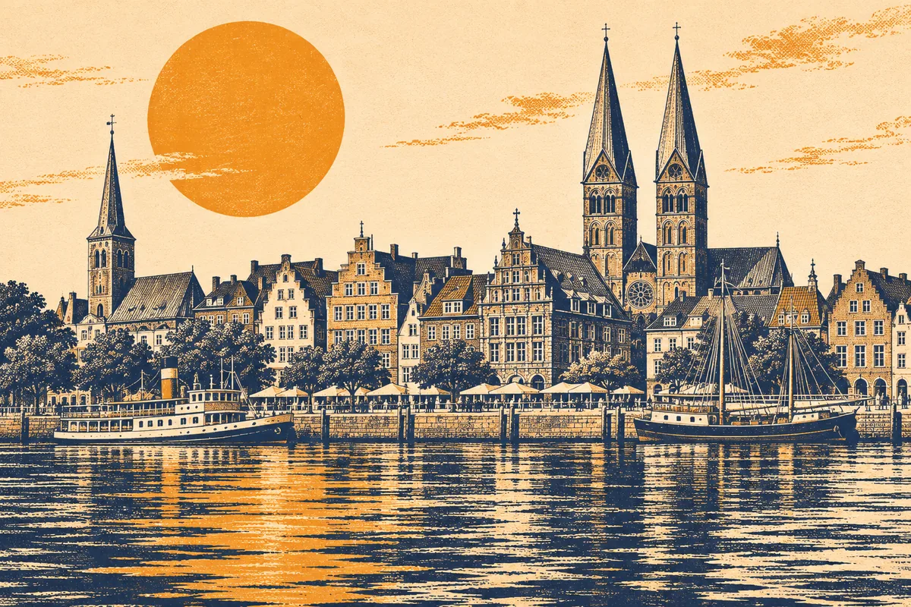

Our community
Meet the ideas and questions that bring our local AI safety community together.
About SAIBRWe bring people in Bremen together to understand the risks of advanced AI and explore ways to make it safer.
We started Safe AI Bremen in October 2026 and are planning our first event. Stay tuned!

Meet the ideas and questions that bring our local AI safety community together.
About SAIBRFind local announcements and online talks you can join from Bremen.
Browse eventsGet to grips with AI safety through introductory readings, research and a map of the field.
Explore resourcesHave a question about AI safety or want to learn more about Safe AI Bremen? Email either of us. We’d love to hear from you.
Co-founder
vzelenkova03@gmail.comCo-founder
fzh647@gmail.com